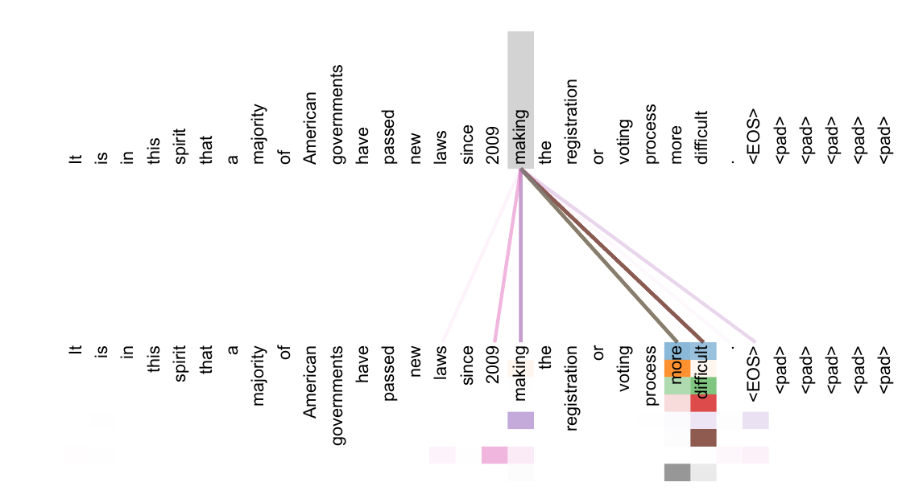

11 · RESULTS
“Not only do individual attention heads clearly learn to perform different tasks, many appear to exhibit behavior related to the syntactic and semantic structure of the sentences.” — §4, p. 7

Attention for the word “making”; colors = different heads. Figure 3, paper p. 13.
Visual: Figure 3 (paper p. 13); text: §4 (paper p. 7) and Appendix (paper p. 13).